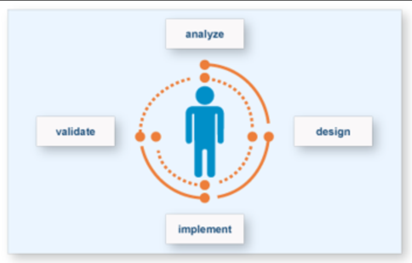

Extra Revision
F27ID Introduction to Interactive Design
2020-2021
## Revision Questions
## Revision Question In the user centric design below, the analyze phase aims to:  * a) Conceptualize a design * b) Understand the user and his/her requirements * c) Evaluate the design * d) Implement the Prototype * e) All of the above <aside class='notes'> </aside>
## Answer * e) All of the above <aside class='notes'> </aside>
## Revision Question Given the following user requirements, say if they are functional or non-functional. "The user should be able to navigate the website with clear links" is a [Functional / Non Functional] requirement * a) Functional * b) Non-Functional <aside class='notes'> </aside>
## Answer * b) Non-Functional <aside class='notes'> </aside>
## Revision Question Given the following user requirements, say if they are functional or non-functional. "The user must be able to browse the website on both PC and Mac" is a [Functional / Non Functional] requirement * a) Functional * b) Non-Functional <aside class='notes'> </aside>
## Answer * b) Non-Functional <aside class='notes'> </aside>
## Revision Question Given the following user requirements, say if they are functional or non-functional. "The search function must be able to return a query answer in less than 0.5 seconds" is a [Functional / Non Functional] requirement * a) Functional * b) Non-Functional <aside class='notes'> </aside>
## Answer * b) Non-Functional <aside class='notes'> </aside>
## Revision Question Given the following user requirements, say if they are functional or non-functional. "The user should be able to add items to shopping cart" is a [Functional / Non Functional] requirement * a) Functional * b) Non-Functional <aside class='notes'> </aside>
## Answer * a) Functional <aside class='notes'> </aside>
## Revision Question Which is true of user requirements? You can select more than one. * a) They should be as specific as possible. * b) They should not require domain knowledge to create. * c) They should be testable and/or measurable. * d) They should be prioritized. <aside class='notes'> </aside>
## Answer * a) They should be as specific as possible. * c) They should be testable and/or measurable. <aside class='notes'> </aside>
## Revision Question Understanding the problem space does not involve understanding users' problems with an existing experience. * a) True * b) False <aside class='notes'> </aside>
## Answer * b) False <aside class='notes'> </aside>
## Revision Question Understanding the problem space includes: * a) understanding social issues with design * b) understanding technical issues with design * c) Understanding conceptual design * d) developing prototypes <aside class='notes'> </aside>
## Answer * a) understanding social issues with design * b) understanding technical issues with design <aside class='notes'> </aside>
## Revision Question The high fidelity prototypes are: * a) Cheap to develop * b) Uses materials that you would expect to be in the final product * c) Easy to develop using storyboards * d) Used for evaluation <aside class='notes'> </aside>
## Answer * b) Uses materials that you would expect to be in the final product * d) Used for evaluation <aside class='notes'> </aside>
## Revision Question Example of a prototype is: * a) A series of screen sketches * b) A storyboard, i.e. a cartoon-like series of scenes * c) A Powerpoint slide show * e) A video simulating the use of a system * f) All of the above <aside class='notes'> </aside>
## Answer * f) All of the above <aside class='notes'> </aside>
## Revision Question Personas are fictitious characters of your target user group * a) True * b) False <aside class='notes'> </aside>
## Answer * a) True <aside class='notes'> </aside>
## Revision Question Software Systems have perceived affordance: * a) True * b) False <aside class='notes'> </aside>
## Answer * a) True <aside class='notes'> </aside>
## Revision Question Indicate whether the example below are either high fidelity or low fidelity prototypes (if applicable): **A miniature model car** * a) High-fidelity * b) Low-fidelity * c) Not Applicable <aside class='notes'> </aside>
## Answer * b) Low-fidelity <aside class='notes'> </aside>
## Revision Question A systematic literature review is: * a) One which starts in your own library, then goes to on-line databases and, finally, to the internet * b) One which gives equal attention to the principal contributors to the area * c) A replicable, scientific and transparent process * d) A responsible, professional process of time-management for research <aside class='notes'> </aside>
## Answer * c) A replicable, scientific and transparent process <aside class='notes'> </aside>
## Revision Question Indicate whether the example below are either high fidelity or low fidelity prototypes (if applicable): **A paper based sketches of website screens** * a) High-fidelity * b) Low-fidelity * c) Not Applicable <aside class='notes'> </aside>
## Answer * b) Low-fidelity <aside class='notes'> </aside>
## Revision Question Indicate whether the example below are either high fidelity or low fidelity prototypes (if applicable): **An excel sheet with user requirements** * a) High-fidelity * b) Low-fidelity * c) Not Applicable <aside class='notes'> </aside>
## Answer * c) Not Applicable <aside class='notes'> </aside>
## Revision Question Indicate whether the example below are either high fidelity or low fidelity prototypes (if applicable): **A foldable tablet made of two mobile phones and duck tape** * a) High-fidelity * b) Low-fidelity * c) Not Applicable <aside class='notes'> </aside>
## Answer * a) High-fidelity <aside class='notes'> </aside>
## Revision Question Indicate whether the example below are either high fidelity or low fidelity prototypes (if applicable): **A wireframe with 2 of 7 planned functions** * a) High-fidelity * b) Low-fidelity * c) Not Applicable <aside class='notes'> </aside>
## Answer * a) High-fidelity Note, when it has functionality, it gets into hi-fi. You should not get confused because of the word wireframe. <aside class='notes'> </aside>
## Revision Question What are some benefits of using low fidelity prototypes (select all that apply)? You may choose more than one answer. * a) User driven * b) Useful for testing * c) Efficient for proof-of concept * d) Help evaluate the final system <aside class='notes'> </aside>
## Answer * c) Efficient for proof-of concept * d) Help evaluate the final system <aside class='notes'> </aside>
## Revision Question User requirements can be extracted using (Select All that applies): * a) Interview * b) Questionnaire * c) Observation * d) Workshop * e) All of the above <aside class='notes'> </aside>
## Answer * e) All of the above <aside class='notes'> </aside>
## Revision Question Which of the following describes a situation where an object’s sensory characteristics intuitively imply its functionality and use * a) Mapping * b) Affordance * c) Feedback * e) Visibility * f) Constraints <aside class='notes'> </aside>
## Answer * b) Affordance <aside class='notes'> </aside>
## Revision Question The constraints principle determine ways of restricting the kinds of user interaction that can take place at a given moment * a) True * b) False <aside class='notes'> </aside>
## Answer * a) True <aside class='notes'> </aside>
## Revision Question The core component of conceptual model are (select all that applies): * a) Metaphors and analogies to covey to people how to understand what a product is used for * b) The concepts to which people are exposed through the product * c) The mappings between the concepts and the user experience the product is designed to support * d) The way of restricting users’ interaction that can take place * e) Provide information to user after an action is performed <aside class='notes'> </aside>
## Answer * a) Metaphors and analogies to covey to people how to understand what a product is used for. * b) The concepts to which people are exposed through the product * c) The mappings between the concepts and the user experience the product is designed to support <aside class='notes'> </aside>
## Revision Question What could a lab study involve? * a) Observation * b) Interviews * c) Collecting only qualitative data <aside class='notes'> </aside>
## Answer * a) Observation <aside class='notes'> </aside>
## Revision Question The technique that involves small-group discussion guided by a trained leader (moderator) in an interactive setting is? * a) Interview * b) Survey * c) Field Trial * d) Focus Group <aside class='notes'> </aside>
## Answer * d) Focus Group <aside class='notes'> </aside>
## Revision Question Is the following generated reference list entry uses the Harvard citation style. Is it correct? **2017., Uglow, J. Mr Lear: A LIFE OF ART AND NONSENSE. London: Faber and Faber.** * a) Yes * b) No <aside class='notes'> </aside>
## Answer * b) No Note, [ANS No] - This reference is INCORRECT! The citation generator did not put the date in the correct place (after the author) and the title should be in sentence case rather than capital case e.g. A life of … (no capitals in the sentence) not A LIFE OF … <aside class='notes'> </aside>
## Revision Question Interface metaphors may limit the designers' imagination in coming up with new conceptual models. * a) True * b) False <aside class='notes'> </aside>
## Answer * a) True <aside class='notes'> </aside>
## Revision Question Indicate if the goal below represent user-experience or usability. **Goal: engaging** * a) Usability * b) User-Experience <aside class='notes'> </aside>
## Answer * b) User-Experience <aside class='notes'> </aside>
## Revision Question Indicate if the goal below represent user-experience or usability. **Goal: easy to use** * a) Usability * b) User-Experience <aside class='notes'> </aside>
## Answer * a) Usability <aside class='notes'> </aside>
## End